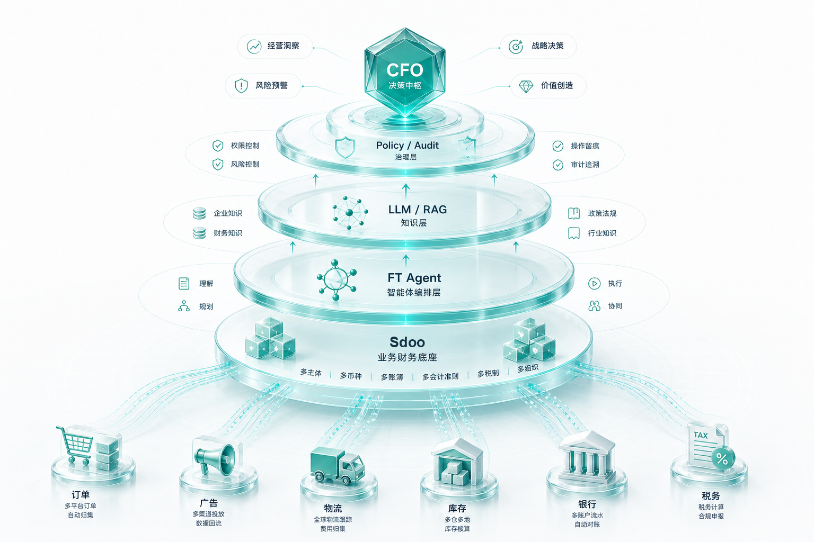
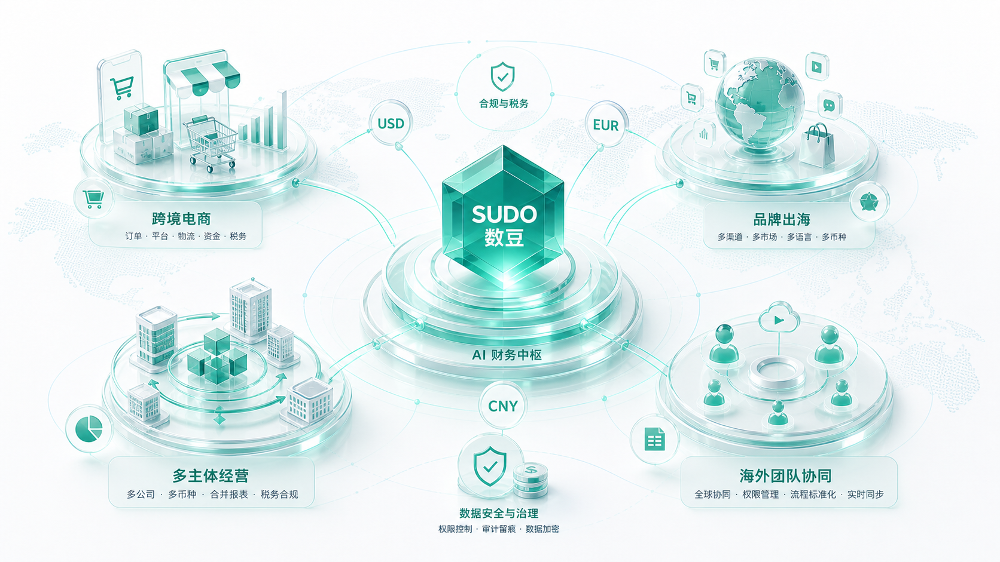
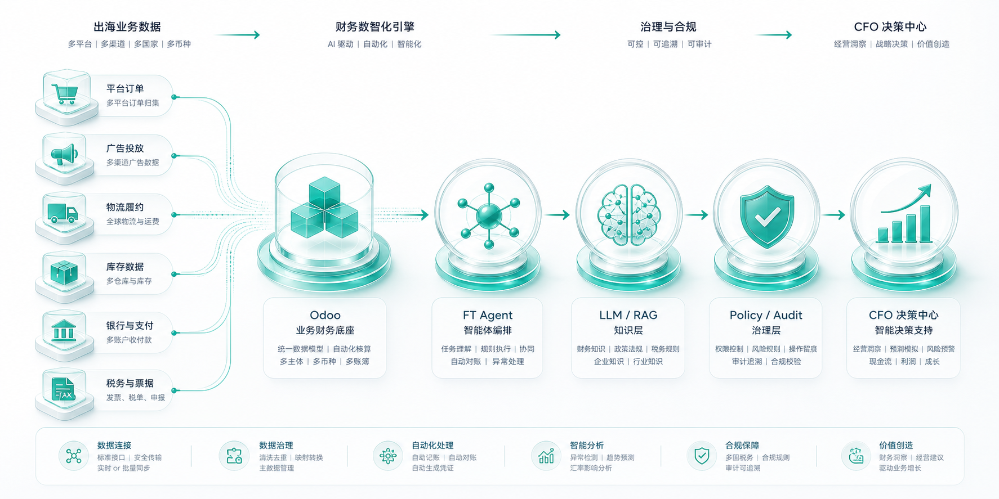
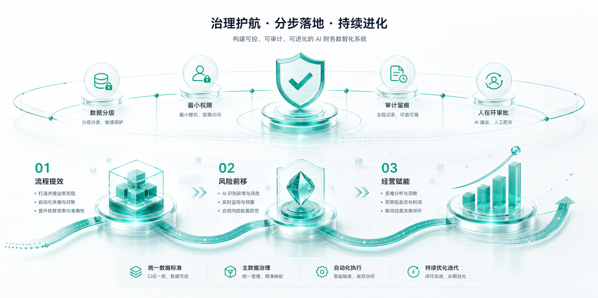

Outbound value
让出海经营的利润、现金流与风险持续清晰。
利润、现金流、风险和合规不再分散在系统外，而是在同一个 AI 财务网络里被理解、预测和治理。
Architecture
在业务财务底座之上，构建可执行的 AI 能力层。
以 Sdoo 为业务财务底座，以 FT Agent 编排工作，以 LLM/RAG 接入知识，以 Policy/Audit 约束动作。

Global scenarios
面向跨境电商、品牌出海与多主体经营的真实场景。
跨境电商、品牌出海、多主体经营、海外团队协同，都需要同一套可解释、可执行、可审计的财务智能。

Operating loop
把分散的出海数据转化为 CFO 可以行动的判断。
切换查看从数据连接、Agent 执行到审计闭环的完整路径。

当前能力
连接全球经营数据
从业务发生到财务判断，减少系统外 Excel、人工解释和事后补救。
Governed AI
让 AI 参与财务工作，同时保持可控、可解释、可审计。
从流程提效开始，到风险前移，再到经营赋能。每一次 AI 判断、引用、动作和人工确认都留下证据。

Ready for global finance operations